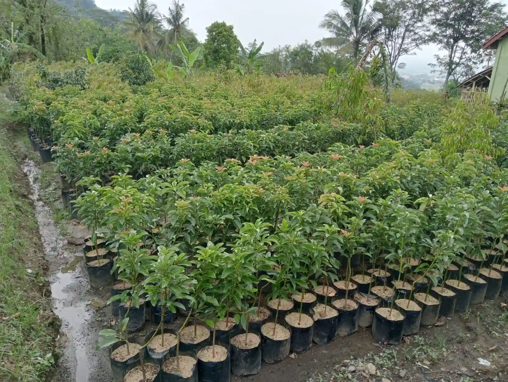
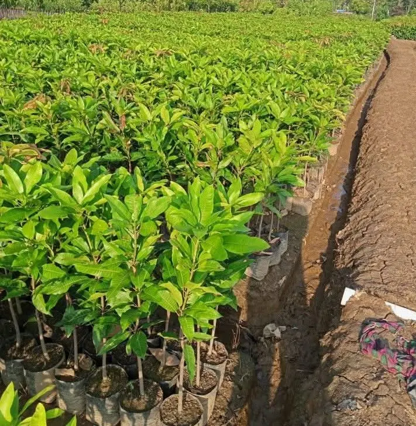

🌱 Bibit Tanaman Berkualitas dan Unggul
Mulai Investasi Perkebunan Impian Anda Bersama "Tunas Muda Nurseri"
Kami menyediakan berbagai varietas bibit tanaman buah dan tanaman kayu dengan kualitas terbaik yang Telah Bersertifikat - Label dan siap tanam.
Varietas Terjamin
Pengiriman Aman
Perawatan Berkala
Harga Terjangkau
Tersedia Sertifikasi & label
Jasa Penanaman & Perawatan
Katalog Produk Pilihan
Pilih jenis tanaman terbaik yang sesuai dengan kebutuhan lahan Anda.

Kategori Buah
Bibit Durian
Bibit durian unggulan varietas Bawor, Musang King,super tembaga dan duri Hitam kualitas premium.
Mulai Rp 35rb
Pesan Via WA

Kategori Buah
Bibit Alpukat
Varietas alpukat jumbo seperti Aligator dan Miki yang bersifat adaptif, genjah, dan sangat produktif.
Mulai Rp 35rb
Pesan Via WA

Kategori Buah
Bibit Jambu Air
Jambu Air Citra, Madu Deli, King Rose, dll dengan varietas unggul memiliki label atau bersertifikat.
Hubungi Admin
Pesan Via WA